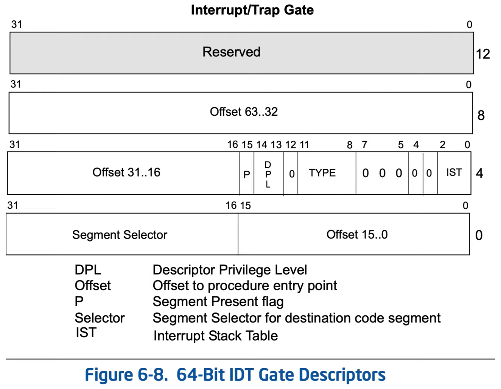

Interrupt Descriptor- The descriptors in the IDT describe one of two types:
-
The difference is how the processor handles the IF flag in the EFLAGS register

The IDT entries contain a Segment Selector and a 64-bit offset (a far pointer).


- IST != 0 specifies a specific index to use for the RSP as pulled from the TSS (7 upper values).
- When IST = 0, the RSP will be determined by the RPL in the CS segment selector.
- The DPL controls whether a specific INT $N instruction is permitted to use the gate or not.
When looking at memory around IDTR we may see the IDT with each line being an Interrupt Descriptor.

The first record being:
00000000
FFFFF800
76838E00
00100100
Which in binary is:
0000 0000 0000 0000 ` 0000 0000 0000 0000
1111 1111 1111 1111 ` 1111 1000 0000 0000
0111 0110 1000 0011 ` 1000 1110 0000 0000
0000 0000 0001 0000 ` 0000 0001 0000 0000
According to the interrupt descriptor structure:- 64-bit offset = 0xFFFFF80076830100
- 16-bit segment selector = 0000 0000 0001 0000 => RPL = 0 (Kernel) , TI = 0 (GDT), index = 0x10 (record 2 (3rd record)). interestingly, all segment selectors in the IDT are the same.
- other 16-bits of flags = 1000 1110 0000 0000 => P = 1, DPL = 0 (Kernel), Type = 1110 (Interrupt Gate), IST = 0.
so many detail WOW (god ghelp pls)
So... assuming we have INT3.- IDTR is pointing at the IDT table.
- Record number 3 it taken.
- Simultanously, TR points at a TSS record in GDT to pull a Stack address to be used to save the task state, the address is pulled from the TSS depending on the IST or RPL of the interrupt descriptor, SS:RSP is filled, now the processor has a stack and the task state is saved.
- The interrupt record has a segment selector, an offset (which is a 64-bit far pointer), and details.
- The segment selector points to a GDT or LDT record, from which only privilege details are compared, and access info is aquired - e.g. the type of the selector (0y11011 = E/R accessed for example), the base is 0x0.
- The offset (0xFFFFF80076830100) points to the code for the interrupt handler.
- CS:RIP changes to the address of the interrupt handler.
i